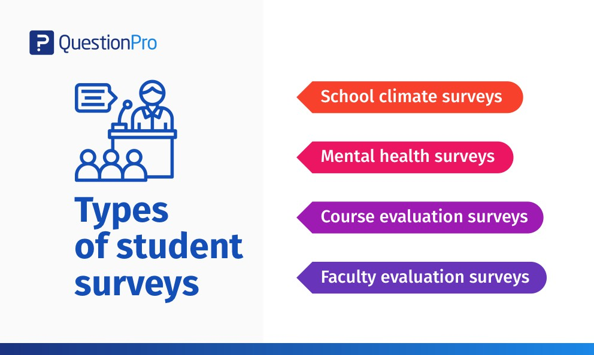

- Pandemic and crisis
- Short term solutions
- Long term solution
- In summary
The COVID-19 pandemic took the world into an unprompted “new normal”;
 It restricted everyone from going out of their houses; interrupted businesses, and more distinctively, it has delayed the economy. As a perceptible result, it has not only revealed the already existing socio-economic gap but has also exacerbated it. Now, the ASEAN region was not an exception to this. Simply looking into its education sector will unveil its persisting problem of socio-economic inequalities, augmented by the COVID-19 pandemic.
Prior to the pandemic, the ASEAN countries were already disproportionate in terms of achieving the Sustainable Development Goal of ensuring an inclusive and equitable quality of education, with poverty as one of the primary causes (Association of Southeast Asian Nations, 2020b). However, under the circumstances of the pandemic, the educational gap in the region is expected to further expand as the education sector suffers even more for the following reasons:
As businesses were negatively impacted, with some of them closing down, millions in the labor sector have been laid off, resulting in a large number of school dropouts from affected families.
The COVID-19 pandemic has had the education sector relying mostly on the internet and technological devices to which the poorer households have less to no access. Moreover, traditional materials are also more difficult to acquire in remote learning. In addition to this, poorer households also tend to lack a conducive environment for learning.
Alongside businesses, schools have also been led to closures due to lack of funds, insufficient enrollees, and the inability to digitalize.
It restricted everyone from going out of their houses; interrupted businesses, and more distinctively, it has delayed the economy. As a perceptible result, it has not only revealed the already existing socio-economic gap but has also exacerbated it. Now, the ASEAN region was not an exception to this. Simply looking into its education sector will unveil its persisting problem of socio-economic inequalities, augmented by the COVID-19 pandemic.
Prior to the pandemic, the ASEAN countries were already disproportionate in terms of achieving the Sustainable Development Goal of ensuring an inclusive and equitable quality of education, with poverty as one of the primary causes (Association of Southeast Asian Nations, 2020b). However, under the circumstances of the pandemic, the educational gap in the region is expected to further expand as the education sector suffers even more for the following reasons:
As businesses were negatively impacted, with some of them closing down, millions in the labor sector have been laid off, resulting in a large number of school dropouts from affected families.
The COVID-19 pandemic has had the education sector relying mostly on the internet and technological devices to which the poorer households have less to no access. Moreover, traditional materials are also more difficult to acquire in remote learning. In addition to this, poorer households also tend to lack a conducive environment for learning.
Alongside businesses, schools have also been led to closures due to lack of funds, insufficient enrollees, and the inability to digitalize.
Short-term solutions:

Solution 1
: Many businesses, public libraries, and schools, though closed to visitors, have kept their internet signals on or have expanded them with signal boosters to include their parking lots. This has become a lifeline for students of all ages that have little to no access to the internet at home. Many colleges have certain parking lot hours and social distancing guidelines, such as one empty parking space between cars. This has been especially helpful for students and teachers alike that live in rural areas where WiFi is spotty at best, no matter how updated your hardware is. Students can take their laptops or phones to these WiFi hotspots which allows them to connect and do their schoolwork, watch lectures, and take tests. Also, the public spaces allow students who do not have smartphones or computers to use the deployed electronic devices for their lecture.
Solution 2
: If accessing the internet is difficult, another option includes working with your teachers or your kids’ teachers to have downloadable slideshows, videos, assignments, and even exams. This will allow students to connect to the internet just for the duration of the downloads, then you can return home and work on schoolwork there, which may be a more comfortable location. Once the content has been downloaded, students can access it without needing a continuous connection to the internet, making it possible to complete assignments from anywhere.
Long-term solutions

Solution3
: Most immediately, governments must ensure that students who have fallen behind receive the support that they need to catch up to expected learning targets. The first step must be to carry out just-in-time assessments to identify these students and their support needs.
Solution4
: Given the significant financial strain that economies have been under during the pandemic, some countries may face government budget cuts that could jeopardize the gains that have been made in recent years in terms of access to education and improved learning outcomes. To ensure a resilient recovery, it is essential that the education budget is protected and that the schools that need financing the most are supported. To help the most vulnerable students, governments should prioritize directing much of the funding and resources to support schools to deliver remote instruction, particularly if those schools are serving high-poverty and high-minority populations. To encourage students to remain in school, incentives such as scholarships may need to be implemented. Yet learning recovery programs will not be feasible without substantial financial support. In the presence of budget cuts, affluent families will be able to continue to fund educational boosts like tutoring; however, lower-income families will not as easily be able to fill this gap.
In summary,
We believe that the solution to the problem of the poverty-driven educational gap is educational service. Choosing teachers through strict documentation procedures and teaching children from one family per teacher can help bridge the educational gap among low-income families.
Youth have always been at the forefront of societal change; they play a critical role in solving major challenges of inequalities as they stand to lose the most. Nonetheless, national leaders should also show their support for this initiative, as it will assist them in efficiently acquiring knowledge and skills for their cause. In combating educational inequality, Youth could show their support through:
Raising awareness/voices on social platforms for the affected or marginalized groups in their countries in the field of education.
Volunteers to provide basic ICT skills for rural lecturers to set up online educational content for distant learning.
Encourage youth to set up charities/donations for the distribution of capable electronic devices to the less fortunate students.
Metrics of measurement
-Availability of education & technology in the outermost provinces and decrease in the number of people who do not have access to the internet and technological devices
-Increase in the rate of literacy among students. Decrease in the number of out-of-school youth.